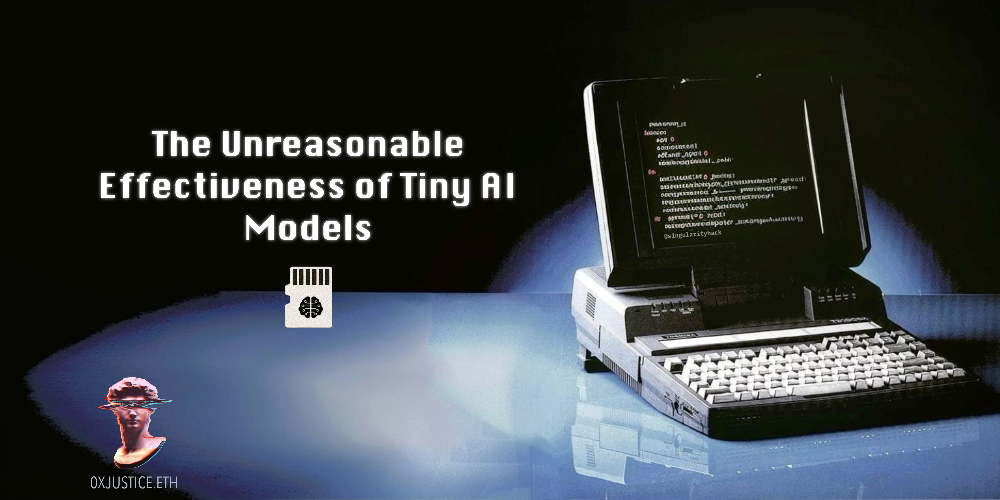
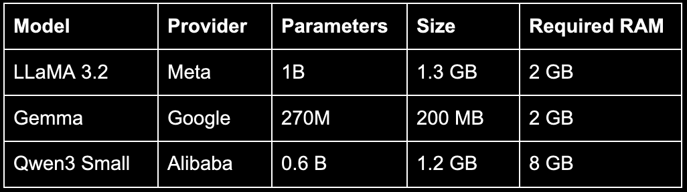

The Unreasonable Effectiveness of Tiny AI Models
Originally published at https://paragraph.com/@0xjustice/the-unreasonable-effectiveness-of-tiny-ai-models

Everyone’s obsessed with LARGE language models. That's understandable, after all, that's what LLM stands for. These are the premier models, requiring massive data centers that consume vast amounts of energy to stay cool and utilize every conceivable GPU to harness the planet's mass into intelligence. They're measured in hundreds of billions of parameters and represent the cutting edge of what's possible.
But while everyone watches the giants, something stranger is happening at the other end of the spectrum. Small Language Models (SLMs) are quietly delivering more surprising results. These small models are explicitly designed to minimize memory and energy consumption while maintaining performance. They run offline, locally, and continuously at the cost of electricity.
Humanly speaking, we’re not surprised when intelligence flows from a trillion-dollar cloud-hosted genie. We expect magic. The effect is different when we interact with an entirely local AI that is smaller than a movie MP4 file. It hits different when you can hand someone a mind on a disposable flash drive.
Top Small Models
Many of the leading small models originate from the same tech giants that produce the behemoths: Meta, Google, and Alibaba. They say art is about constraints, so that's why I find the competition among small models even more interesting. Building intelligence under strict resource limits is a different game.

To put these specifications into perspective, the latest Raspberry Pi features 16GB of RAM and costs approximately $100. You could run any of these models on one of those. You could also have run it on a Vista PC from 2006. The hardware requirements are almost comically modest by modern standards.
But here's where things get weird: with these models, we've learned to compress terabytes of human writing into just over a gigabyte of understanding. People have been pursuing this kind of semantic compression for decades, making incremental progress measured in tiny percentages. Then, in the last five years, we made a vertical leap.
Which raises the question: what does intelligence have to do with compression?
Intelligence as Compression
There's a competition called the Hutter Prize that's been running since 2006. The goal is deceptively simple: compress the first 1 GB of English Wikipedia as much as possible. The catch? The compression must be lossless, meaning you can decompress back to the exact original text, byte for byte. The size of your decompression program also counts against you.
After nearly two decades of the world's best compression algorithms competing, the current winners can compress a 1 GB file down to about 114 MB. That's 11.4% of the original size. Progress has been incremental and measured in single-digit percentage improvements year over year.
The creators of the Hutter Prize don't actually care about compression for its own sake. They believe that compression is intelligence. To compress something effectively, you need to understand its patterns, structure, and underlying rules. You need to learn its grammar, predict what comes next, and recognize redundancy. Sound familiar?
Ilya Sutskever (co-founder & Chief Scientist at OpenAI) made the same point in his Fireside Chat with Jensen Huang and gave this example:
“Say you read a detective novel, and on the last page, the detective says, ‘I am going to reveal the identity of the criminal, and that person’s name is _____.’ If you can predict that word, you demonstrate deep understanding of the plot, characters, and clues.”
Now consider what these small language models are doing. They take hundreds of terabytes of training text and distill it into model weights of about 1 GB. Yes, it's lossy compression. You can't reconstruct the exact training data. But you can rebuild the essence and knowledge encoded within.
Small models are performing compression at roughly 1000x the efficiency of the best traditional algorithms. And they're not just storing data, they're storing understanding. The Hutter Prize's fastest progress took decades to move from ~20% compression to ~11%. If compression really is intelligence, then we haven't witnessed gradual improvement. We're seeing an event horizon.
Small Model Performance
How good are small models, really? The benchmarks suggest that they can match or surpass models 10–30 times their size, though they trade breadth for efficiency and are more prone to hallucination. I wanted to see for myself.
Testing LLaMA 3.2
I downloaded the LLaMA 3.2 1B model and ran it through the Massive Multitask Language Understanding (MMLU) benchmark. If you're not familiar, MMLU is a gauntlet of approximately 15,000 multiple-choice questions spanning a wide range of academic subjects. When it was released in 2020, language models performed only slightly better than random guessing. By 2024, they were outperforming human experts. One year later, the test became too easy and was replaced by MMLU Pro.
The 1B LLaMA model achieved an overall score of 53.92%.
That might not sound impressive until you realize that GPT-3 (the 175 billion parameter model that launched the modern AI era in June 2020) only scored 43.9% and required roughly 700GB of storage. This tiny model, 175 times smaller, is now outperforming it.
Giving It a Library
But what if we gave this model something to work with? What if it had reference materials? I wanted to do this myself as well.
I downloaded the Simple English Wikipedia, which is approximately 1 GB in size and contains roughly 200,000 articles. For context, that's a fraction of the regular English Wikipedia's 6 million articles, but it's still the equivalent of one or two floor-to-ceiling bookshelves. I created vector embeddings from it and reran the evaluations. This approach, known as RAG (Retrieval-Augmented Generation), enables the model to look up relevant information before responding.
The results were modest but meaningful, yielding improvements of 1-2% in subjects such as algebra, economics, mathematics, formal logic, and physics. Not a revolution, but proof of concept. In future tests, I plan to provide it with more focused material, such as open-source textbooks from OpenStax.
What This Actually Means
Strip away the abstractions and here's what we're looking at: a model that scores higher than the average college-educated person across specialized subjects. It answers questions a hundred times faster than any human could. And it's resourceful; you can equip it with any reference library you want, tailored precisely to a task.
AI Librarian from The Time Machine (2002)
Imagine a graduate student standing in front of a wall of reference books, able to absorb and recall any page instantly, answering questions in hypertime. That's the reality we miss when we only speak in parameters and benchmarks.
The Internet of Minds (IoM)
And we've barely scratched the surface. A recent paper, "Less is More: Recursive Reasoning with Tiny Networks," demonstrates techniques for extracting even better performance from even smaller models. Samsung's Tiny Recursive Model (7 million parameters) recently beat DeepSeek-R1, Gemini 2.5 Pro, and o3-mini at reasoning tasks. As JacksonAtkinsX put it: "How can a model 10,000x smaller be smarter?"
The answer matters because of what it enables. When models become this small, it’s when "everything wakes up." Small, coordinating minds embedded everywhere: Doorknobs, coffee machines, ATMs, vending machines, thermostats, smart locks, and appliances all speaking the same language, all capable of understanding, and with a macro model of the world.
This is the Internet-of-Minds: billions of tiny minds, communicating, collaborating, and adapting. Not dumb sensors reporting to a cloud server, but distributed intelligence making decisions at the edge. We're already living in a post-singularity world. We'll see it clearly in hindsight.
A Familiar Pattern
When Apple began designing its own chips, it didn't try to compete with Intel's high-power desktop processors. They started with mobile chips optimized for efficiency, rather than raw power. Then those mobile chips got so good that Apple scaled them up. The M-series chips that now power MacBooks and Mac Studios are descendants of iPhone processors, not Intel architectures. They moved from small to big.
The same pattern could play out with AI models. Instead of making large models more efficient, we might find ourselves scaling up what we learned from tiny models and exploring a new kind of distributed and emergent intelligence.
Learn more:
Originally published on 0xJustice.eth